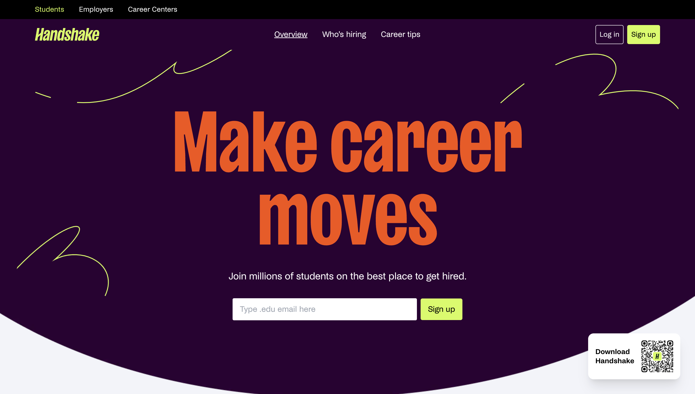
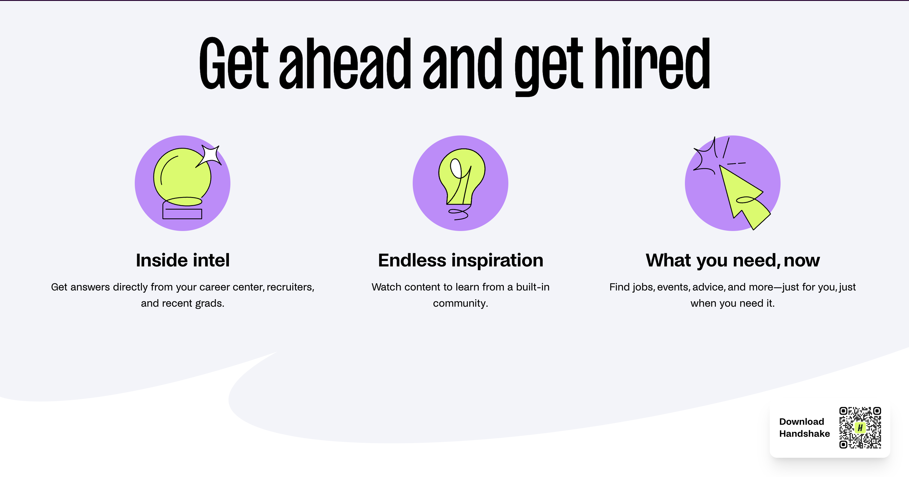
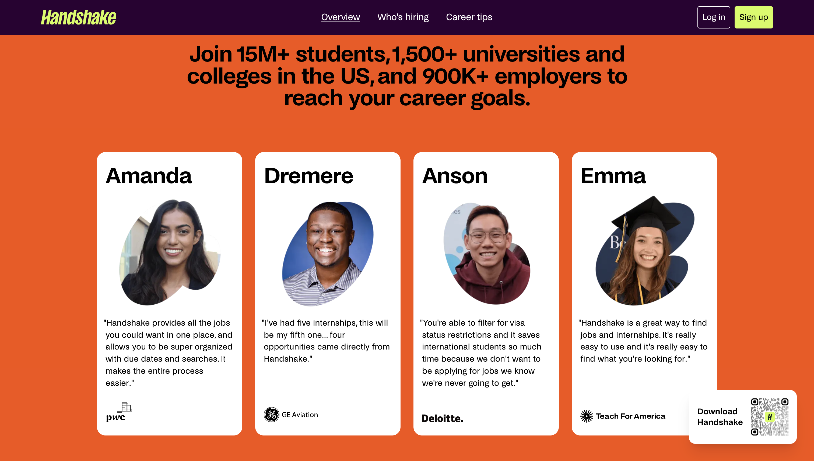
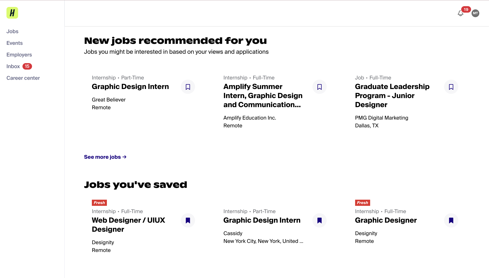

Handshake.com is a specialized job finding website focused on connecting college students and recent graduates with job opportunities, internships, and career events. Its primary purpose is to democratize access to opportunity by making it easier for students to find the right job, regardless of their background or connections. The site serves as a corporate platform, providing a service rather than selling a product or engaging in e-commerce. It aims to recruit new clients (both students and employers), provide a means for online interaction and application, and inform its users about career opportunities -Handshake
Handshake's content is optimized for its intended audience – the language is direct and action-oriented. The employment of phrases like "Make career moves" and "Get ahead and get hired" resonates with the ambitious student demographic.
The content effectively employs icons and illustrations to represent different features such as "Inside intel" and "Endless inspiration", using visual metaphors that are easily understandable without relying on text-heavy explanations.
 The focus on storytelling through success stories and personal testimonials is evident, although these could be more prominently featured to foster a deeper sense of community and shared experience.
Navigation is intuitive, with a top menu bar clearly differentiating between student, employer, and career center-focused content. Hover and click feedback are well implemented, offering users a tactile sense of interaction.
The site’s personalization features notably, the job recommendations based on user activity, tailor the experience to individual needs and interests. This personalization extends to the event and employer suggestions, creating a curated experience that can significantly enhance the user's journey through the site.
The UI employs a card-based layout for categorizing different types of content, which not only aids in organization but also makes the interface more scalable and adaptable to different screen sizes. The integration of company logos in a monochrome format maintains visual harmony and provides a familiar reference point for users, creating an instant connection with well-known brands.
Typography on the website is strategically used; bold and large sans-serif fonts draw attention to primary actions and information, while secondary texts are appropriately less bold with a clear informational hierarchy. The site’s commitment to maintaining an uncluttered layout with ample white space prevents cognitive overload and facilitates easy content scanning.
In conclusion, Handshake.com is a well-designed and purposeful platform that is good at connecting students and recent graduates with job opportunities and career development resources. Its visual and interactive design elements are thoughtfully implemented, fostering engagement and ease of use. While there are areas for potential improvement, particularly in enhancing community engagement and accessibility features, the website offers essential tools for young professionals beginning their career paths.